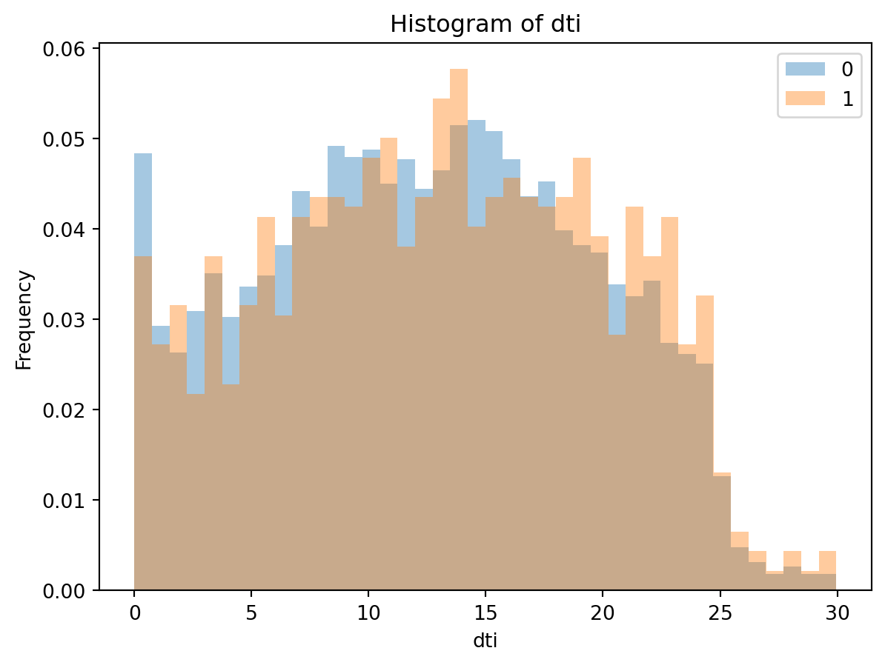
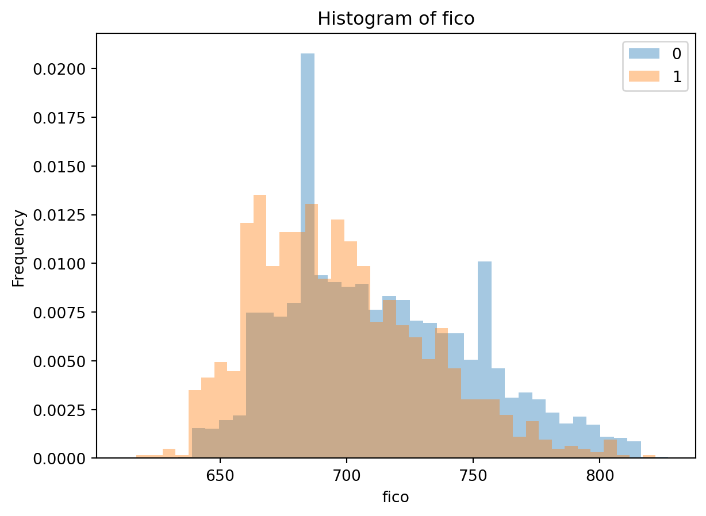

| credit.policy | purpose | int.rate | installment | log.annual.inc | dti | fico | days.with.cr.line | revol.bal | revol.util | inq.last.6mths | delinq.2yrs | pub.rec | not.fully.paid | |
|---|---|---|---|---|---|---|---|---|---|---|---|---|---|---|
| 0 | 1 | debt_consolidation | 0.1189 | 829.10 | 11.350407 | 19.48 | 737 | 5639.958333 | 28854 | 52.1 | 0 | 0 | 0 | 0 |
| 1 | 1 | credit_card | 0.1071 | 228.22 | 11.082143 | 14.29 | 707 | 2760.000000 | 33623 | 76.7 | 0 | 0 | 0 | 0 |
| 2 | 1 | debt_consolidation | 0.1357 | 366.86 | 10.373491 | 11.63 | 682 | 4710.000000 | 3511 | 25.6 | 1 | 0 | 0 | 0 |
| 3 | 1 | debt_consolidation | 0.1008 | 162.34 | 11.350407 | 8.10 | 712 | 2699.958333 | 33667 | 73.2 | 1 | 0 | 0 | 0 |
| 4 | 1 | credit_card | 0.1426 | 102.92 | 11.299732 | 14.97 | 667 | 4066.000000 | 4740 | 39.5 | 0 | 1 | 0 | 0 |
P2P Online Lending Default Prediction- A Usecase on LendingClub Default Risk
1. Summary
This work intends to leaverage machine learning models to predict borrower behaviour and hence probability of default. More specifically, the work focuses aszxon predicting loan defaults using historical data from the Lending Club platform. By applying advanced preprocessing techniques, exploratory data analysis (EDA), and a Logistic Regression model, we uncover patterns and trends in borrower risk profiles. The final model demonstrated strong performance on unseen test data, achieving an accuracy of 84.0%. Out of 1,916 test cases, the model correctly predicted 1,608 cases, with 308 incorrect predictions. These errors included both false positives (predicting a loan default when it didn’t occur) and false negatives (failing to predict an actual default). While false negatives pose a greater risk in financial decision-making, this model provides actionable insights to improve risk management and reduce potential financial losses for the platform. Despite its promising predictive capabilities, further research is needed to enhance the model’s accuracy and better understand the characteristics of misclassified loans. Such improvements could play a crucial role in minimizing financial risks and maximizing the model’s effectiveness in peer-to-peer lending platforms.
2. Introduction
Crowd-based business models are one of the last decade’s developments with the proliferation of platform economies and web technology applications (see Sutherland and Jarrahi, 2018). One of such developments following the 2007 financial crisis are the P2P online lending platforms. The backbone of the digital economic system built on this is that it relies on trust a currency. Like all other crowd-based business models, P2P online lending heavily relied on trustworthiness of borrowers. To help with this, online platforms like LendingClub used a number of features to define eligibility and rate of access to loan for potential borrowers.Traditional credit risk analysis often relies on rule-based systems or credit scores, which might not fully capture the complexities of borrower behavior. By applying Logistic Regression, we aim to develop a model that is both interpretable and effective in identifying high-risk loans. This analysis intends to provide a data-driven approach to improve credit decision-making in a broader context of platform based transactions through machine learning models. Extensive research has been conducted on borrower risk behaviour analysis and trust within P2P online lending system, highlighting the critical role trust and predictability holds in ensuring platform sustainability and mitigating default risks (Cai, et al, 2016 and Lenz, 2016). Building on this, this work focuses on developing a comprehensive risk analysis framework through machine hlearning models that will help predict borrower behaviour.
3. Methods
3.1 Data
Data Source
This analysis is based on the historic loan data from LendingClub (LendingClub. (n.d.) and Matmcreative. (n.d.).). It contains various borrower and loan features, such as interest rates, annual income, debt-to-income ratio (DTI), and credit history. The target variable, not.fully.paid, indicates whether the borrower defaulted on the loan (1) or successfully repaid it (0).
Feature Description
The key features taken into account for this analysis are:
purpose: The purpose of the loan
int.rate: Interest rate of the loan the applicant received
installment: Monthly payment for the loan the applicant received.
log.annual.inc: annual_income (growth rate)
dti: Debt-to-income ratio
revol.bal: Total credit revolving balance
revol.util: Revolving line utilization rate
inq.last.6mths: The number of inquiries in past 6 months
delinq.2yrs: Delinquencies on lines of credit in the last 2 years.
pub.rec: The number of derogatory public records
fico: FICO credit score
days.with.cr.line: Days with Credit Line
not.fully.paid: Binary response on weather the loan is paid or not.
Data Splitting to Training and Testing Data
Train-Test Split:
The dataset was split into training (80%) and test (20%) sets, resulting in 1916 observations in the test set. Features: The model was trained on both numeric features (e.g., int.rate, installment) and categorical features (e.g., purpose, loan_categories).
Preprocessing:
Numeric features were scaled using StandardScaler, while categorical features were one-hot encoded. Missing values were imputed using the median (numeric) or most frequent value (categorical).
3.2 Analysis
Train-Test Split: The dataset was split into training (80%) and test (20%) sets, resulting in 1916 observations in the test set.
Features: The model was trained on both numeric features (e.g., int.rate, installment) and categorical features (e.g., purpose, loan_categories).
Preprocessing: Numeric features were scaled using StandardScaler, while categorical features were one-hot encoded. Missing values were imputed using the median (numeric) or most frequent value (categorical).
Model: Logistic Regression was selected as the final model for its simplicity, slightly higher accuracy, and interpretability. All columns except
risk_categorywere used in model fitting.risk_categorywas drop due to it being redundant to “loan_categories” (both derived from “fico” score). A grid search with 10-fold cross-validation on the hyperparameterCof the logistic regression model is used for optimization. Python language was used to conduct this analysis.
4. Results and Discussion
In order for us to draw context about the data, let us have a look at the first few rows of the data; check the info about all columns, data types, and number of NaN values; and summary statistis.
<class 'pandas.core.frame.DataFrame'>
RangeIndex: 9578 entries, 0 to 9577
Data columns (total 14 columns):
# Column Non-Null Count Dtype
--- ------ -------------- -----
0 credit.policy 9578 non-null int64
1 purpose 9578 non-null object
2 int.rate 9578 non-null float64
3 installment 9578 non-null float64
4 log.annual.inc 9578 non-null float64
5 dti 9578 non-null float64
6 fico 9578 non-null int64
7 days.with.cr.line 9578 non-null float64
8 revol.bal 9578 non-null int64
9 revol.util 9578 non-null float64
10 inq.last.6mths 9578 non-null int64
11 delinq.2yrs 9578 non-null int64
12 pub.rec 9578 non-null int64
13 not.fully.paid 9578 non-null int64
dtypes: float64(6), int64(7), object(1)
memory usage: 1.0+ MB| credit.policy | purpose | int.rate | installment | log.annual.inc | dti | fico | days.with.cr.line | revol.bal | revol.util | inq.last.6mths | delinq.2yrs | pub.rec | not.fully.paid | |
|---|---|---|---|---|---|---|---|---|---|---|---|---|---|---|
| 0 | 1 | debt_consolidation | 0.1189 | 829.10 | 11.350407 | 19.48 | 737 | 5639.958333 | 28854 | 52.1 | 0 | 0 | 0 | 0 |
| 1 | 1 | credit_card | 0.1071 | 228.22 | 11.082143 | 14.29 | 707 | 2760.000000 | 33623 | 76.7 | 0 | 0 | 0 | 0 |
| 2 | 1 | debt_consolidation | 0.1357 | 366.86 | 10.373491 | 11.63 | 682 | 4710.000000 | 3511 | 25.6 | 1 | 0 | 0 | 0 |
| 3 | 1 | debt_consolidation | 0.1008 | 162.34 | 11.350407 | 8.10 | 712 | 2699.958333 | 33667 | 73.2 | 1 | 0 | 0 | 0 |
| 4 | 1 | credit_card | 0.1426 | 102.92 | 11.299732 | 14.97 | 667 | 4066.000000 | 4740 | 39.5 | 0 | 1 | 0 | 0 |
| ... | ... | ... | ... | ... | ... | ... | ... | ... | ... | ... | ... | ... | ... | ... |
| 9573 | 0 | all_other | 0.1461 | 344.76 | 12.180755 | 10.39 | 672 | 10474.000000 | 215372 | 82.1 | 2 | 0 | 0 | 1 |
| 9574 | 0 | all_other | 0.1253 | 257.70 | 11.141862 | 0.21 | 722 | 4380.000000 | 184 | 1.1 | 5 | 0 | 0 | 1 |
| 9575 | 0 | debt_consolidation | 0.1071 | 97.81 | 10.596635 | 13.09 | 687 | 3450.041667 | 10036 | 82.9 | 8 | 0 | 0 | 1 |
| 9576 | 0 | home_improvement | 0.1600 | 351.58 | 10.819778 | 19.18 | 692 | 1800.000000 | 0 | 3.2 | 5 | 0 | 0 | 1 |
| 9577 | 0 | debt_consolidation | 0.1392 | 853.43 | 11.264464 | 16.28 | 732 | 4740.000000 | 37879 | 57.0 | 6 | 0 | 0 | 1 |
9578 rows × 14 columns
4.1 Data splitting
Split the data into train_df (80%) and test_df (20%) with random_state = 522.
| credit.policy | int.rate | installment | log.annual.inc | dti | fico | days.with.cr.line | revol.bal | revol.util | inq.last.6mths | delinq.2yrs | pub.rec | not.fully.paid | |
|---|---|---|---|---|---|---|---|---|---|---|---|---|---|
| credit.policy | 1.00 | -0.29 | 0.06 | 0.03 | -0.08 | 0.34 | 0.09 | -0.19 | -0.10 | -0.53 | -0.07 | -0.06 | -0.15 |
| int.rate | -0.29 | 1.00 | 0.28 | 0.06 | 0.22 | -0.71 | -0.12 | 0.09 | 0.46 | 0.20 | 0.16 | 0.10 | 0.17 |
| installment | 0.06 | 0.28 | 1.00 | 0.44 | 0.05 | 0.08 | 0.18 | 0.23 | 0.08 | -0.00 | -0.00 | -0.03 | 0.06 |
| log.annual.inc | 0.03 | 0.06 | 0.44 | 1.00 | -0.06 | 0.11 | 0.34 | 0.37 | 0.06 | 0.02 | 0.02 | 0.02 | -0.03 |
| dti | -0.08 | 0.22 | 0.05 | -0.06 | 1.00 | -0.24 | 0.05 | 0.18 | 0.34 | 0.02 | -0.02 | -0.00 | 0.03 |
| fico | 0.34 | -0.71 | 0.08 | 0.11 | -0.24 | 1.00 | 0.25 | -0.01 | -0.54 | -0.18 | -0.22 | -0.15 | -0.15 |
| days.with.cr.line | 0.09 | -0.12 | 0.18 | 0.34 | 0.05 | 0.25 | 1.00 | 0.23 | -0.02 | -0.04 | 0.09 | 0.08 | -0.03 |
| revol.bal | -0.19 | 0.09 | 0.23 | 0.37 | 0.18 | -0.01 | 0.23 | 1.00 | 0.20 | 0.03 | -0.03 | -0.03 | 0.06 |
| revol.util | -0.10 | 0.46 | 0.08 | 0.06 | 0.34 | -0.54 | -0.02 | 0.20 | 1.00 | -0.02 | -0.04 | 0.07 | 0.08 |
| inq.last.6mths | -0.53 | 0.20 | -0.00 | 0.02 | 0.02 | -0.18 | -0.04 | 0.03 | -0.02 | 1.00 | 0.01 | 0.08 | 0.15 |
| delinq.2yrs | -0.07 | 0.16 | -0.00 | 0.02 | -0.02 | -0.22 | 0.09 | -0.03 | -0.04 | 0.01 | 1.00 | 0.01 | 0.01 |
| pub.rec | -0.06 | 0.10 | -0.03 | 0.02 | -0.00 | -0.15 | 0.08 | -0.03 | 0.07 | 0.08 | 0.01 | 1.00 | 0.05 |
| not.fully.paid | -0.15 | 0.17 | 0.06 | -0.03 | 0.03 | -0.15 | -0.03 | 0.06 | 0.08 | 0.15 | 0.01 | 0.05 | 1.00 |
not.fully.paid
0 0.839859
1 0.160141
Name: proportion, dtype: float64
not.fully.paid
0 0.840292
1 0.159708
Name: proportion, dtype: float64(7662, 14)| credit.policy | purpose | int.rate | installment | log.annual.inc | dti | fico | days.with.cr.line | revol.bal | revol.util | inq.last.6mths | delinq.2yrs | pub.rec | not.fully.paid | |
|---|---|---|---|---|---|---|---|---|---|---|---|---|---|---|
| count | 7662.000000 | 7662 | 7662.000000 | 7662.000000 | 7662.000000 | 7662.000000 | 7662.000000 | 7662.000000 | 7.662000e+03 | 7662.000000 | 7662.000000 | 7662.000000 | 7662.000000 | 7662.000000 |
| unique | NaN | 7 | NaN | NaN | NaN | NaN | NaN | NaN | NaN | NaN | NaN | NaN | NaN | NaN |
| top | NaN | debt_consolidation | NaN | NaN | NaN | NaN | NaN | NaN | NaN | NaN | NaN | NaN | NaN | NaN |
| freq | NaN | 3172 | NaN | NaN | NaN | NaN | NaN | NaN | NaN | NaN | NaN | NaN | NaN | NaN |
| mean | 0.807883 | NaN | 0.122498 | 318.706990 | 10.932388 | 12.626631 | 710.975463 | 4574.926113 | 1.717180e+04 | 46.870501 | 1.566562 | 0.159358 | 0.062386 | 0.160141 |
| std | 0.393990 | NaN | 0.026774 | 207.488994 | 0.614014 | 6.867246 | 37.763921 | 2508.344473 | 3.518355e+04 | 28.941005 | 2.166408 | 0.531531 | 0.263564 | 0.366761 |
| min | 0.000000 | NaN | 0.060000 | 15.670000 | 7.547502 | 0.000000 | 612.000000 | 180.041667 | 0.000000e+00 | 0.000000 | 0.000000 | 0.000000 | 0.000000 | 0.000000 |
| 25% | 1.000000 | NaN | 0.103900 | 163.570000 | 10.555813 | 7.260000 | 682.000000 | 2820.000000 | 3.224250e+03 | 22.800000 | 0.000000 | 0.000000 | 0.000000 | 0.000000 |
| 50% | 1.000000 | NaN | 0.122100 | 267.740000 | 10.918718 | 12.730000 | 707.000000 | 4140.041667 | 8.707500e+03 | 46.300000 | 1.000000 | 0.000000 | 0.000000 | 0.000000 |
| 75% | 1.000000 | NaN | 0.139300 | 435.540000 | 11.289832 | 17.940000 | 737.000000 | 5730.041667 | 1.837150e+04 | 70.900000 | 2.000000 | 0.000000 | 0.000000 | 0.000000 |
| max | 1.000000 | NaN | 0.216400 | 926.830000 | 14.180154 | 29.960000 | 827.000000 | 17639.958330 | 1.207359e+06 | 119.000000 | 33.000000 | 13.000000 | 5.000000 | 1.000000 |
4.2 Feature Engineering
Here, from a business perspective, we need to identify high-risk and low-risk loan profiles to improve lending profitability while minimizing default rates. This includes assessing borrower behavior, income stability, and loan utilization to create a predictive model for effective risk categorization (see Coşer et al., 2019 and Khandani et al.,2010).
Key metrix and considerations: - Debt-to-Income Ratio - Credit Utilization Ratio( revol.util)_ how much of their revolving credit borrowers are using relative to their limit with higher values indicating possible financial strain. - Loan Duration vs. Risk: If longer-term loans are associated with higher default rate (days.with.cr.line).
Loan categories
Below, to help us create the loan categories, we are using the FICO risk profile categories [see the Borrower risk profiles categories from here](https://www.consumerfinance.gov/data-research/consumer-credit-trends/student-loans/borrower-risk-profiles/#:~:text=We%20focus%20on%20five%20credit%20score%20levels%3A&text=Subprime%20(credit%20scores%20of%20580,scores%20of%20720%20or%20above) - Deep subprime (credit scores below 580) - Subprime (credit scores of 580-619) - Near-prime (credit scores of 620-659) - Prime (credit scores of 660-719) - Super-prime (credit scores of 720 or above)
Risk categories
Let us explore the data further with specific borrower risk profile categories Based on the above 5 loan categories, we framed three main risk categories as high, medium and low risk profile with: fico score of at least 720 (Low Risk), ‘fico’ score between 650 and 720 (‘Medium Risk’) and ‘fico’ score of 650 as ‘High Risk’.
4.3 Descriptive Analysis- EDA
To evaluate the usefulness of predictors for identifying loan defaults, we conducted an exploratory data analysis. Features such as int.rate (interest rate) and dti (debt-to-income ratio) displayed notable differences between borrowers who fully paid their loans and those who defaulted. For example, loans with higher interest rates (int.rate) were associated with a greater likelihood of default, while borrowers with lower debt-to-income ratios (dti) were less likely to default. Categorical features like purpose also provided significant insights; loans categorized under “small business” and “credit card” showed higher default rates compared to others, such as “home improvement.”



--------------------------------------------------------------------------- MaxRowsError Traceback (most recent call last) File ~/miniforge3/envs/loan_risk522/lib/python3.11/site-packages/altair/vegalite/v5/api.py:2004, in TopLevelMixin.to_dict(self, validate, format, ignore, context) 2001 # remaining to_dict calls are not at top level 2002 context["top_level"] = False -> 2004 vegalite_spec: Any = _top_schema_base(super(TopLevelMixin, copy)).to_dict( 2005 validate=validate, ignore=ignore, context=dict(context, pre_transform=False) 2006 ) 2008 # TODO: following entries are added after validation. Should they be validated? 2009 if is_top_level: 2010 # since this is top-level we add $schema if it's missing File ~/miniforge3/envs/loan_risk522/lib/python3.11/site-packages/altair/utils/schemapi.py:1163, in SchemaBase.to_dict(self, validate, ignore, context) 1161 msg = f"{type(self)} instance has both a value and properties : cannot serialize to dict" 1162 raise ValueError(msg) -> 1163 result = _todict(kwds, context=context, **opts) 1164 if validate: 1165 # NOTE: Don't raise `from err`, see `SchemaValidationError` doc 1166 try: File ~/miniforge3/envs/loan_risk522/lib/python3.11/site-packages/altair/utils/schemapi.py:553, in _todict(obj, context, np_opt, pd_opt) 551 return [_todict(v, context, np_opt, pd_opt) for v in obj] 552 elif isinstance(obj, dict): --> 553 return { 554 k: _todict(v, context, np_opt, pd_opt) 555 for k, v in obj.items() 556 if v is not Undefined 557 } 558 elif isinstance(obj, SchemaLike): 559 return obj.to_dict() File ~/miniforge3/envs/loan_risk522/lib/python3.11/site-packages/altair/utils/schemapi.py:554, in <dictcomp>(.0) 551 return [_todict(v, context, np_opt, pd_opt) for v in obj] 552 elif isinstance(obj, dict): 553 return { --> 554 k: _todict(v, context, np_opt, pd_opt) 555 for k, v in obj.items() 556 if v is not Undefined 557 } 558 elif isinstance(obj, SchemaLike): 559 return obj.to_dict() File ~/miniforge3/envs/loan_risk522/lib/python3.11/site-packages/altair/utils/schemapi.py:549, in _todict(obj, context, np_opt, pd_opt) 547 return result 548 if isinstance(obj, SchemaBase): --> 549 return obj.to_dict(validate=False, context=context) 550 elif isinstance(obj, (list, tuple)): 551 return [_todict(v, context, np_opt, pd_opt) for v in obj] File ~/miniforge3/envs/loan_risk522/lib/python3.11/site-packages/altair/vegalite/v5/api.py:4033, in Chart.to_dict(self, validate, format, ignore, context) 4031 copy.data = core.InlineData(values=[{}]) 4032 return super(Chart, copy).to_dict(**kwds) -> 4033 return super().to_dict(**kwds) File ~/miniforge3/envs/loan_risk522/lib/python3.11/site-packages/altair/vegalite/v5/api.py:1998, in TopLevelMixin.to_dict(self, validate, format, ignore, context) 1995 except TypeError: 1996 # Non-narwhalifiable type supported by Altair, such as dict 1997 data = original_data -> 1998 copy.data = _prepare_data(data, context) 1999 context["data"] = data 2001 # remaining to_dict calls are not at top level File ~/miniforge3/envs/loan_risk522/lib/python3.11/site-packages/altair/vegalite/v5/api.py:283, in _prepare_data(data, context) 281 elif not isinstance(data, dict) and _is_data_type(data): 282 if func := data_transformers.get(): --> 283 data = func(nw.to_native(data, pass_through=True)) 285 # convert string input to a URLData 286 elif isinstance(data, str): File ~/miniforge3/envs/loan_risk522/lib/python3.11/site-packages/altair/vegalite/data.py:42, in default_data_transformer(data, max_rows) 39 return pipe 41 else: ---> 42 return to_values(limit_rows(data, max_rows=max_rows)) File ~/miniforge3/envs/loan_risk522/lib/python3.11/site-packages/altair/utils/data.py:165, in limit_rows(data, max_rows) 162 values = data 164 if max_rows is not None and len(values) > max_rows: --> 165 raise_max_rows_error() 167 return data File ~/miniforge3/envs/loan_risk522/lib/python3.11/site-packages/altair/utils/data.py:148, in limit_rows.<locals>.raise_max_rows_error() 135 def raise_max_rows_error(): 136 msg = ( 137 "The number of rows in your dataset is greater " 138 f"than the maximum allowed ({max_rows}).\n\n" (...) 146 "on how to plot large datasets." 147 ) --> 148 raise MaxRowsError(msg) MaxRowsError: The number of rows in your dataset is greater than the maximum allowed (5000). Try enabling the VegaFusion data transformer which raises this limit by pre-evaluating data transformations in Python. >> import altair as alt >> alt.data_transformers.enable("vegafusion") Or, see https://altair-viz.github.io/user_guide/large_datasets.html for additional information on how to plot large datasets.
alt.RepeatChart(...)--------------------------------------------------------------------------- MaxRowsError Traceback (most recent call last) File ~/miniforge3/envs/loan_risk522/lib/python3.11/site-packages/altair/vegalite/v5/api.py:4033, in Chart.to_dict(self, validate, format, ignore, context) 4031 copy.data = core.InlineData(values=[{}]) 4032 return super(Chart, copy).to_dict(**kwds) -> 4033 return super().to_dict(**kwds) File ~/miniforge3/envs/loan_risk522/lib/python3.11/site-packages/altair/vegalite/v5/api.py:1998, in TopLevelMixin.to_dict(self, validate, format, ignore, context) 1995 except TypeError: 1996 # Non-narwhalifiable type supported by Altair, such as dict 1997 data = original_data -> 1998 copy.data = _prepare_data(data, context) 1999 context["data"] = data 2001 # remaining to_dict calls are not at top level File ~/miniforge3/envs/loan_risk522/lib/python3.11/site-packages/altair/vegalite/v5/api.py:283, in _prepare_data(data, context) 281 elif not isinstance(data, dict) and _is_data_type(data): 282 if func := data_transformers.get(): --> 283 data = func(nw.to_native(data, pass_through=True)) 285 # convert string input to a URLData 286 elif isinstance(data, str): File ~/miniforge3/envs/loan_risk522/lib/python3.11/site-packages/altair/vegalite/data.py:42, in default_data_transformer(data, max_rows) 39 return pipe 41 else: ---> 42 return to_values(limit_rows(data, max_rows=max_rows)) File ~/miniforge3/envs/loan_risk522/lib/python3.11/site-packages/altair/utils/data.py:165, in limit_rows(data, max_rows) 162 values = data 164 if max_rows is not None and len(values) > max_rows: --> 165 raise_max_rows_error() 167 return data File ~/miniforge3/envs/loan_risk522/lib/python3.11/site-packages/altair/utils/data.py:148, in limit_rows.<locals>.raise_max_rows_error() 135 def raise_max_rows_error(): 136 msg = ( 137 "The number of rows in your dataset is greater " 138 f"than the maximum allowed ({max_rows}).\n\n" (...) 146 "on how to plot large datasets." 147 ) --> 148 raise MaxRowsError(msg) MaxRowsError: The number of rows in your dataset is greater than the maximum allowed (5000). Try enabling the VegaFusion data transformer which raises this limit by pre-evaluating data transformations in Python. >> import altair as alt >> alt.data_transformers.enable("vegafusion") Or, see https://altair-viz.github.io/user_guide/large_datasets.html for additional information on how to plot large datasets.
alt.Chart(...)We have a high concentration of loans in the medium risk category and significant number low risk borrowers as compared to the high risk borrowers.
--------------------------------------------------------------------------- MaxRowsError Traceback (most recent call last) File ~/miniforge3/envs/loan_risk522/lib/python3.11/site-packages/altair/vegalite/v5/api.py:4033, in Chart.to_dict(self, validate, format, ignore, context) 4031 copy.data = core.InlineData(values=[{}]) 4032 return super(Chart, copy).to_dict(**kwds) -> 4033 return super().to_dict(**kwds) File ~/miniforge3/envs/loan_risk522/lib/python3.11/site-packages/altair/vegalite/v5/api.py:1998, in TopLevelMixin.to_dict(self, validate, format, ignore, context) 1995 except TypeError: 1996 # Non-narwhalifiable type supported by Altair, such as dict 1997 data = original_data -> 1998 copy.data = _prepare_data(data, context) 1999 context["data"] = data 2001 # remaining to_dict calls are not at top level File ~/miniforge3/envs/loan_risk522/lib/python3.11/site-packages/altair/vegalite/v5/api.py:283, in _prepare_data(data, context) 281 elif not isinstance(data, dict) and _is_data_type(data): 282 if func := data_transformers.get(): --> 283 data = func(nw.to_native(data, pass_through=True)) 285 # convert string input to a URLData 286 elif isinstance(data, str): File ~/miniforge3/envs/loan_risk522/lib/python3.11/site-packages/altair/vegalite/data.py:42, in default_data_transformer(data, max_rows) 39 return pipe 41 else: ---> 42 return to_values(limit_rows(data, max_rows=max_rows)) File ~/miniforge3/envs/loan_risk522/lib/python3.11/site-packages/altair/utils/data.py:165, in limit_rows(data, max_rows) 162 values = data 164 if max_rows is not None and len(values) > max_rows: --> 165 raise_max_rows_error() 167 return data File ~/miniforge3/envs/loan_risk522/lib/python3.11/site-packages/altair/utils/data.py:148, in limit_rows.<locals>.raise_max_rows_error() 135 def raise_max_rows_error(): 136 msg = ( 137 "The number of rows in your dataset is greater " 138 f"than the maximum allowed ({max_rows}).\n\n" (...) 146 "on how to plot large datasets." 147 ) --> 148 raise MaxRowsError(msg) MaxRowsError: The number of rows in your dataset is greater than the maximum allowed (5000). Try enabling the VegaFusion data transformer which raises this limit by pre-evaluating data transformations in Python. >> import altair as alt >> alt.data_transformers.enable("vegafusion") Or, see https://altair-viz.github.io/user_guide/large_datasets.html for additional information on how to plot large datasets.
alt.Chart(...)--------------------------------------------------------------------------- MaxRowsError Traceback (most recent call last) File ~/miniforge3/envs/loan_risk522/lib/python3.11/site-packages/altair/vegalite/v5/api.py:2004, in TopLevelMixin.to_dict(self, validate, format, ignore, context) 2001 # remaining to_dict calls are not at top level 2002 context["top_level"] = False -> 2004 vegalite_spec: Any = _top_schema_base(super(TopLevelMixin, copy)).to_dict( 2005 validate=validate, ignore=ignore, context=dict(context, pre_transform=False) 2006 ) 2008 # TODO: following entries are added after validation. Should they be validated? 2009 if is_top_level: 2010 # since this is top-level we add $schema if it's missing File ~/miniforge3/envs/loan_risk522/lib/python3.11/site-packages/altair/utils/schemapi.py:1163, in SchemaBase.to_dict(self, validate, ignore, context) 1161 msg = f"{type(self)} instance has both a value and properties : cannot serialize to dict" 1162 raise ValueError(msg) -> 1163 result = _todict(kwds, context=context, **opts) 1164 if validate: 1165 # NOTE: Don't raise `from err`, see `SchemaValidationError` doc 1166 try: File ~/miniforge3/envs/loan_risk522/lib/python3.11/site-packages/altair/utils/schemapi.py:553, in _todict(obj, context, np_opt, pd_opt) 551 return [_todict(v, context, np_opt, pd_opt) for v in obj] 552 elif isinstance(obj, dict): --> 553 return { 554 k: _todict(v, context, np_opt, pd_opt) 555 for k, v in obj.items() 556 if v is not Undefined 557 } 558 elif isinstance(obj, SchemaLike): 559 return obj.to_dict() File ~/miniforge3/envs/loan_risk522/lib/python3.11/site-packages/altair/utils/schemapi.py:554, in <dictcomp>(.0) 551 return [_todict(v, context, np_opt, pd_opt) for v in obj] 552 elif isinstance(obj, dict): 553 return { --> 554 k: _todict(v, context, np_opt, pd_opt) 555 for k, v in obj.items() 556 if v is not Undefined 557 } 558 elif isinstance(obj, SchemaLike): 559 return obj.to_dict() File ~/miniforge3/envs/loan_risk522/lib/python3.11/site-packages/altair/utils/schemapi.py:551, in _todict(obj, context, np_opt, pd_opt) 549 return obj.to_dict(validate=False, context=context) 550 elif isinstance(obj, (list, tuple)): --> 551 return [_todict(v, context, np_opt, pd_opt) for v in obj] 552 elif isinstance(obj, dict): 553 return { 554 k: _todict(v, context, np_opt, pd_opt) 555 for k, v in obj.items() 556 if v is not Undefined 557 } File ~/miniforge3/envs/loan_risk522/lib/python3.11/site-packages/altair/utils/schemapi.py:551, in <listcomp>(.0) 549 return obj.to_dict(validate=False, context=context) 550 elif isinstance(obj, (list, tuple)): --> 551 return [_todict(v, context, np_opt, pd_opt) for v in obj] 552 elif isinstance(obj, dict): 553 return { 554 k: _todict(v, context, np_opt, pd_opt) 555 for k, v in obj.items() 556 if v is not Undefined 557 } File ~/miniforge3/envs/loan_risk522/lib/python3.11/site-packages/altair/utils/schemapi.py:549, in _todict(obj, context, np_opt, pd_opt) 547 return result 548 if isinstance(obj, SchemaBase): --> 549 return obj.to_dict(validate=False, context=context) 550 elif isinstance(obj, (list, tuple)): 551 return [_todict(v, context, np_opt, pd_opt) for v in obj] File ~/miniforge3/envs/loan_risk522/lib/python3.11/site-packages/altair/vegalite/v5/api.py:4033, in Chart.to_dict(self, validate, format, ignore, context) 4031 copy.data = core.InlineData(values=[{}]) 4032 return super(Chart, copy).to_dict(**kwds) -> 4033 return super().to_dict(**kwds) File ~/miniforge3/envs/loan_risk522/lib/python3.11/site-packages/altair/vegalite/v5/api.py:1998, in TopLevelMixin.to_dict(self, validate, format, ignore, context) 1995 except TypeError: 1996 # Non-narwhalifiable type supported by Altair, such as dict 1997 data = original_data -> 1998 copy.data = _prepare_data(data, context) 1999 context["data"] = data 2001 # remaining to_dict calls are not at top level File ~/miniforge3/envs/loan_risk522/lib/python3.11/site-packages/altair/vegalite/v5/api.py:283, in _prepare_data(data, context) 281 elif not isinstance(data, dict) and _is_data_type(data): 282 if func := data_transformers.get(): --> 283 data = func(nw.to_native(data, pass_through=True)) 285 # convert string input to a URLData 286 elif isinstance(data, str): File ~/miniforge3/envs/loan_risk522/lib/python3.11/site-packages/altair/vegalite/data.py:42, in default_data_transformer(data, max_rows) 39 return pipe 41 else: ---> 42 return to_values(limit_rows(data, max_rows=max_rows)) File ~/miniforge3/envs/loan_risk522/lib/python3.11/site-packages/altair/utils/data.py:165, in limit_rows(data, max_rows) 162 values = data 164 if max_rows is not None and len(values) > max_rows: --> 165 raise_max_rows_error() 167 return data File ~/miniforge3/envs/loan_risk522/lib/python3.11/site-packages/altair/utils/data.py:148, in limit_rows.<locals>.raise_max_rows_error() 135 def raise_max_rows_error(): 136 msg = ( 137 "The number of rows in your dataset is greater " 138 f"than the maximum allowed ({max_rows}).\n\n" (...) 146 "on how to plot large datasets." 147 ) --> 148 raise MaxRowsError(msg) MaxRowsError: The number of rows in your dataset is greater than the maximum allowed (5000). Try enabling the VegaFusion data transformer which raises this limit by pre-evaluating data transformations in Python. >> import altair as alt >> alt.data_transformers.enable("vegafusion") Or, see https://altair-viz.github.io/user_guide/large_datasets.html for additional information on how to plot large datasets.
alt.VConcatChart(...)From the boxplot above, we see that the low risk borrowers have lower average debt-to-income-ratio as compared to the borrowers with medium and high risk profile, based on their fico score. Note also the outliers in FICO scores for the loan purpose of debt consolidation type.
4.4 Correlation Analysis
The EDA for most of the numerical columns produce no strong general trends. We see a higher correlation level between fico and revo.util, and that of fico and interest rate
4.5 Data Transformation and Preprocessing
Since both risk_category and loan_categories are dereived from fico, we decided to drop the fico and risk_category
4.6 Model Building
First we performed 10-folds cross-evaluation on four classifier models: DecisionTree, kNN-neighbours, SVC and Logistic Regression.
| fit_time | score_time | test_score | train_score | |
|---|---|---|---|---|
| Decision Tree | 0.063(+/-0.002) | 0.002(+/-0.000) | 0.742(+/-0.014) | 1.000(+/-0.000) |
| kNN | 0.009(+/-0.000) | 0.016(+/-0.006) | 0.821(+/-0.007) | 0.855(+/-0.002) |
| SVC | 0.654(+/-0.010) | 0.082(+/-0.001) | 0.841(+/-0.002) | 0.845(+/-0.000) |
| Logistic Regression | 0.013(+/-0.001) | 0.002(+/-0.000) | 0.839(+/-0.004) | 0.840(+/-0.000) |
From the mean validation score and training score, we can see that the decision tree model has a much smaller cross-validation score compared to the other three models.
While the SVC model has a slightly larger test score than the logistic model, it requires a significantly longer computation time. Since the test score for SVC and Logistic Regression is very similar (both being ~0.84), We have opt for the logistic regression model as our predictor.
The train score of the Logistic Regression is the same as the validation score, suggesting that the model is likely not overfitted and will be able to generalize well to unseen data. While together with the fact that SVC has a significantly longer computation time,
| rank_test_score | param_LogReg__C | mean_test_score | mean_train_score | |
|---|---|---|---|---|
| 9 | 1 | 0.000687 | 0.839989 | 0.839990 |
| 12 | 2 | 0.002812 | 0.839989 | 0.839743 |
| 0 | 3 | 0.000010 | 0.839859 | 0.839859 |
| 1 | 3 | 0.000016 | 0.839859 | 0.839859 |
| 2 | 3 | 0.000026 | 0.839859 | 0.839859 |
Logistic Regression Model Accuracy: 0.8392| Predict Positive (defaulted) | Predict Negative (fully paid) | ||
|---|---|---|---|
| 0 | True Positive (defaulted) | 0 | 306 |
| 1 | True Negative (fully paid) | 2 | 1608 |
Here, we identify the top 5 influential features for predicting each class. The Logistic Regression’s coefficients provide insights into feature importance, highlighting predictors such as:
fico: Higher credit score were strongly correlated with lower default risk.
loan_income_ratio: Borrowers with higher loan-to-income ratios exhibited a greater likelihood of default.
log.annual.inc: Borrowers with higher log annual income correlates with lower default risk.
int.rate: Borrowers with higher interest rates has a greater likelihood of default.
inq.last.6mths: Borrowers that has more inquires in the past 6 months has a higher default risk.
| features | negative coefficient | |
|---|---|---|
| 0 | num__fico | -0.104898 |
| 1 | num__credit.policy | -0.102413 |
| 2 | num__log.annual.inc | -0.038816 |
| features | positive coefficient | |
|---|---|---|
| 0 | num__int.rate | 0.115715 |
| 1 | num__inq.last.6mths | 0.111241 |
| 2 | num__loan_income_ratio | 0.068905 |
On the test set, the model correctly predicted 1608 cases out of 1916, with 308 errors. These errors were distributed across false positives and false negatives. False negatives, representing cases where a defaulted loan was not flagged, pose a greater financial risk, as these borrowers are likely to incur losses. False positives, on the other hand, might result in stricter lending requirements for borrowers who would have successfully repaid their loans.
Despite the high accuracy score, our model fails to identify any of the 306 actual defaults loan. This suggest that the accuracy score is unable to fully reflect the model performance. Though our model is a great predictor in identifying negative loan defaults (over 99% of the fully paid cases identified), the high false negative makes its real life application limited. Further steps is needed to improve the model such that it can also predict defaulted loans well.
4.8 Limitations
not.fully.paid
0 0.839859
1 0.160141
Name: proportion, dtype: float64As we check the distribution of the target, we can see that the proportion of borrowers that has repayed their loans is significantly higher than those who defaulted their loans. The class imbalance of the target results in the model predicting most cases as “negative” (fully paid).
Possible solutions to the high false negtative include adjusting the class_weight hyperparameter or adjusting the decision threshold of the logistic model. Since accuracy might not fully reflect the model performance in the case of class imbalance, it would be good to include other evaluation metrics when evaulating model performance.
Also, based on the feature importances obtained, additional feature engineering or feature selection can potentially improve model performance.
To account for possible non-linear decision boundary, another alternative is to use a non-linear classification model, for example a decision tree, which can model complex non-linear decision boundaries better.
Reference
- Cai, S., Lin, X., Xu, D., & Fu, X. (2016). Judging online peer-to-peer lending behavior: A comparison of first-time and repeated borrowing requests. Information & Management, 53(7), 857-867.Consumer
- Coşer, A., Maer-Matei, M. M., & Albu, C. (2019). PREDICTIVE MODELS FOR LOAN DEFAULT RISK ASSESSMENT. Economic Computation & Economic Cybernetics Studies & Research, 53(2).
- Equifax. (n.d.). Credit score ranges. Retrieved November 20, 2024, from https://www.equifax.com/personal/education/credit/score/articles/-/learn/credit-score-ranges/
- Financial Protection Bureau. (n.d.). Borrower risk profiles: Student loans. Retrieved November 20, 2024, from https://www.consumerfinance.gov/data-research/consumer-credit-trends/student-loans/borrower-risk-profiles/
- Khandani, A. E., Kim, A. J., & Lo, A. W. (2010). Consumer credit-risk models via machine-learning algorithms. Journal of Banking & Finance, 34(11), 2767-2787.
- Lenz, R. (2016). Peer-to-peer lending: Opportunities and risks. European Journal of Risk Regulation, 7(4), 688-700
- myFICO. (n.d.). What’s in my FICO® Scores? Retrieved November 20, 2024, from [https://www.myfico.com/credit-education/whats-in-your-credit-score](https://www.myfico.com/credit-education/whats-in-your-credit-score#:~:text=FICO%20Scores%20are%20calculated%20using,and%20credit%20mix%20(10%25)